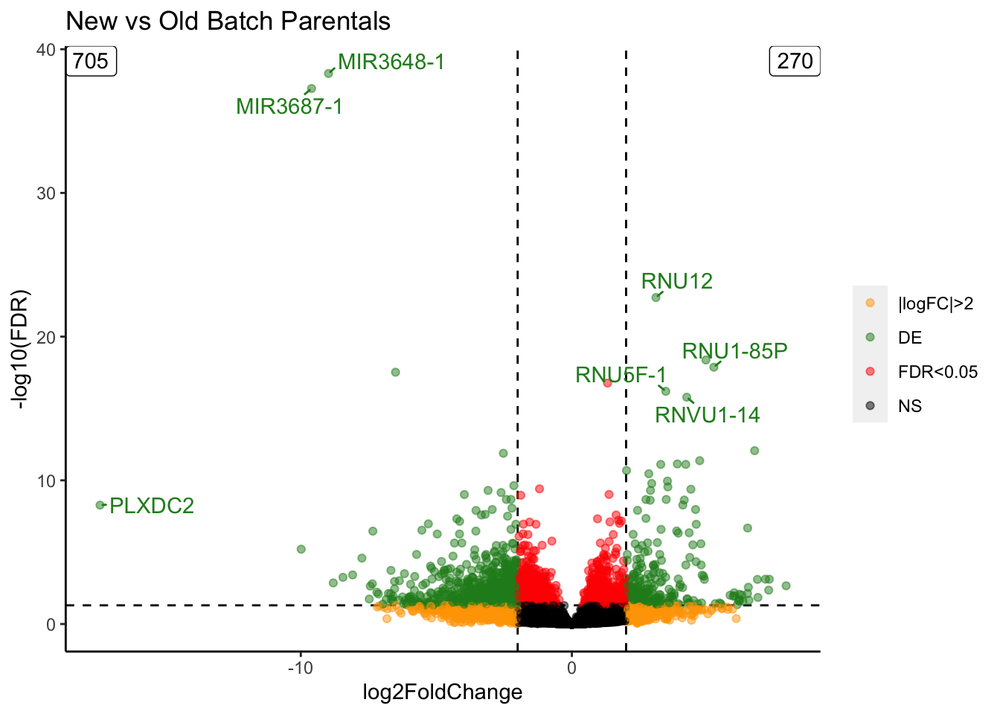
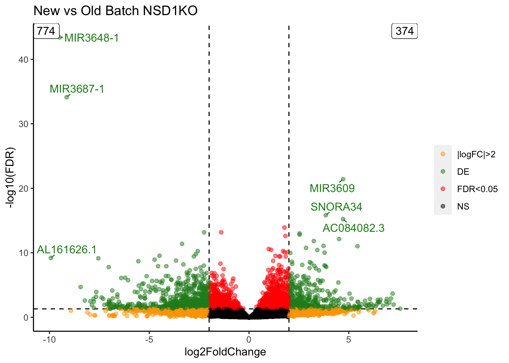
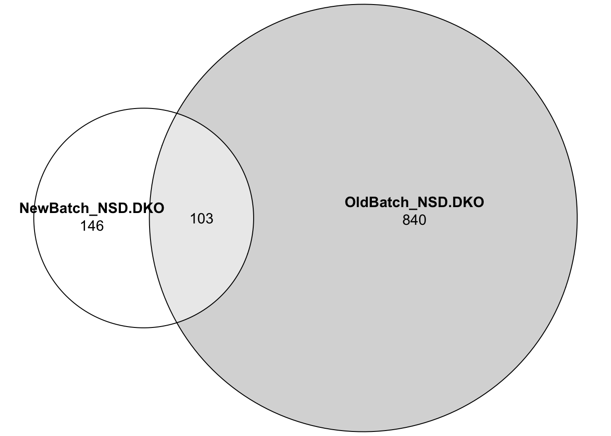
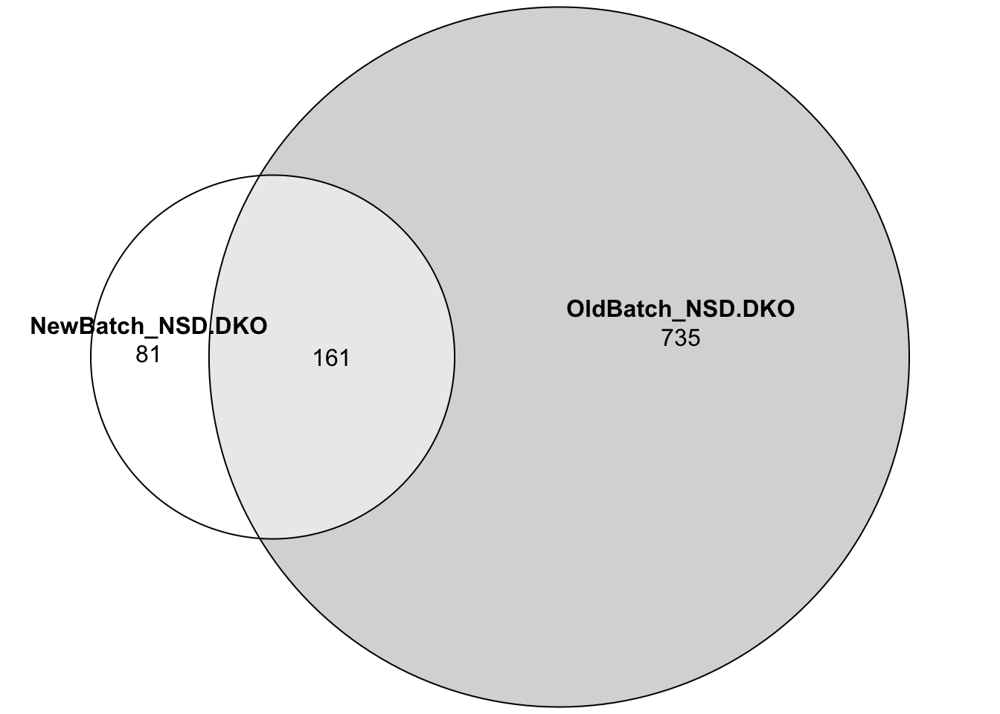

Investigating differences at the transcriptomic level between the old batch and new batch.
Cutoff for DEGs: abs(FC) > 2 & padj < 0.05. Old batch set as baseline.
Direct comparisons were performed as a sanity check to determine how many genes are differentially expressed between the two batches.
In the new batch, OE.K36WT was included as another replicate for parental. In the old batch, K36R was included as another replicate for parental to avoid 1v1 comparisons.


Proportional changes in gene expression in NSD1KO between the two batches.
For the same gene, we’re looking at the log2FC of NSD1KO compared to parental.
Cutoff for DEGs: abs(FC) > 2 & padj < 0.05.
Fewer overlapping upregulated genes between the two batches. However, greater correlation in log2FC in upregulated DEGs than downregulated DEGs.
For the same gene, we’re looking at the log2FC of NSD.DKO compared to parental.

